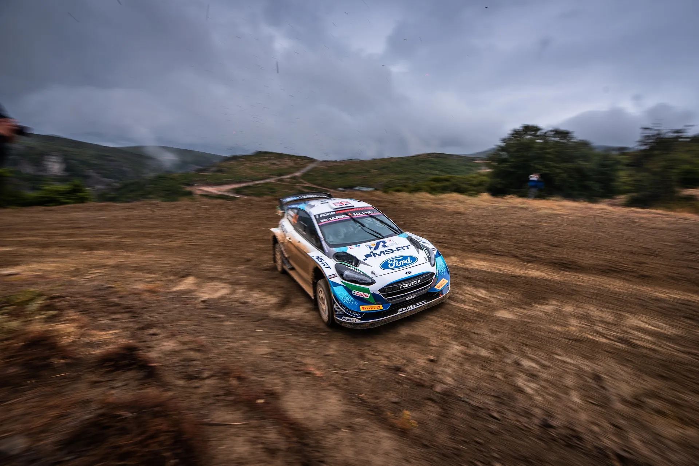
Route History of the Acropolis Rally Part 6: 2021-2025
After a seven-year absence, the Acropolis Rally would return to the calendar for the 2021 WRC season. The event would substitute for Rally Chile, which was cancelled due to the COVID-19 pandemic. The announcement came on the 26th of March, with the rally due to be held in September. It would be the first time the event would be held this late in the year, and would provide its own challenges for the organisers. Rain and mud would be a real headache, especially for the 2021 and 2023 editions.
2021-2023: Loutraki to Lamia
In less than 6 months, the organisers managed to put together a route of 15 stages and 292 competitive kilometers. The rally would return to Lamia for the first time since 2005, with the ceremonial start again moved to downtown Athens, with an SSS outside of the Greek Parliament following.
Friday started from Loutraki, with the crews then heading north to Lamia. It was a relatively short day, with just five stages, only one of which was repeated. SS2/4 Aghii Theodori would be the rally's first “proper” test. It would use roads utilised by the Kineta stage in 1999 in a reverse direction before turning onto a 3km tarmac section that led to the technical and slow section of the Loutraki stage from the late 2000s.
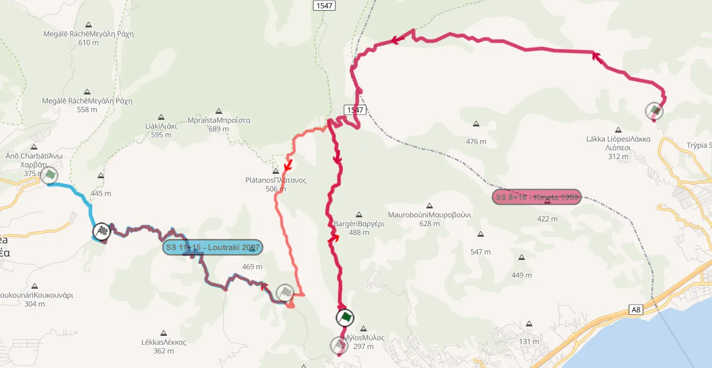
1999 Kineta and 2007 Loutraki compared to 2021 Aghii Theodori
Rally-Maps.com
SS3 Loutraki would be very similar to the Aghii Theodori stage from 2012. It would use a fast and wide road at the start, which eventually became narrow and sinuous, before becoming faster towards the end.
Parts of the Kineta stage were also recce’d by organisers when the route was being made, but it was decided not to use any of them because the surrounding area was severely damaged from recent forest fires.
After a second pass through Aghii Theodori, the crews would move to Thiva, which used a slightly different configuration compared to 2012, having a very technical start to the stage and returning to the fast finish it had back in 2000. The last stage of the day would be Elatia-Zeli, using the fast uphill “Pikes Peak” section. It would be the fastest stage of the rally with an average speed of 117.1 km/h from Thierry Neuville.
Saturday would feature six stages, two of which were repeated runs, in Fthiotida and Fokida. Pavliani would return for the first time since 2005, in its classic configuration, and would be the day's opener. Gravia would return for the first time since 2002, but in reality, the stage was just the Gravia start, mixed with the Drosohori finish. It was also used in the ERC days, with an identical layout for 2016 and 2017.
Bauxites would be the same as 2009 and 2012, using the fast and rough Bauxite Way start, before continuing past the tarmac for the Prosilio section, which is mostly narrow, but also quite quick.
The last stage of the loop was Eleftherohori, again used in the same configuration as in 2011.
For the afternoon loop, only Pavliani and Eleftherohori would be used for a second time.
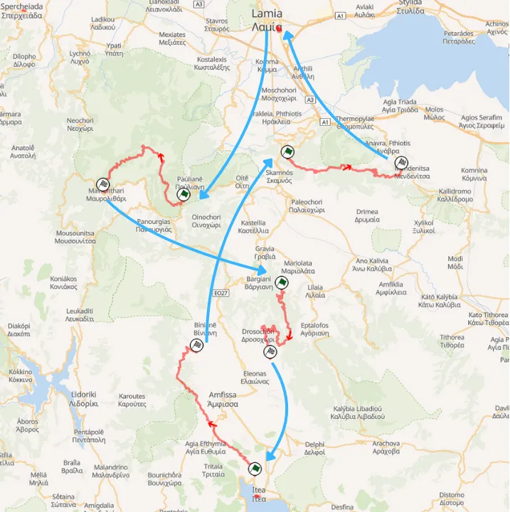
Map of the first loop of Saturday
Rally-Maps.com
Sunday would see just three stages.
Tarzan would return for the first time since 2003, using a similar configuration to the last time it was used, but with the start being from Tarzan’s Hut. It followed the tricky and technical route of the old stage, and then used the more modern and faster finish to Palaia Giannitsou.
Pyrgos was a one-pass stage and was also the longest stage of the rally at 33km long. It used an almost identical route to the 2005 stage and was exceptionally technical.
A second pass of Tarzan would act as the Power Stage, with the first 11km being removed.
For 2022, the event would use a similar formula. For Friday, crews headed from Loutraki to Lamia, with Saturday and Sunday being closer to the rally HQ.
Thursday would see a new shakedown used just to the north of Lamia, as well as the return of the Olympic Stadium SSS, with the stage being sold out just like in 2005.
For Friday, there would be two new configurations of stages in the Loutraki area. SS2/4 Loutraki was the only repeated stage of the day. It was essentially Nea Politia from 2011 in reverse, starting off slow and technical and finishing wide and fast. SS3 Harvati was a combination of Loutraki from 2021 and Pissia, using the first kilometers of the former and the sinuous and technical section next to the dried-up river of the latter.
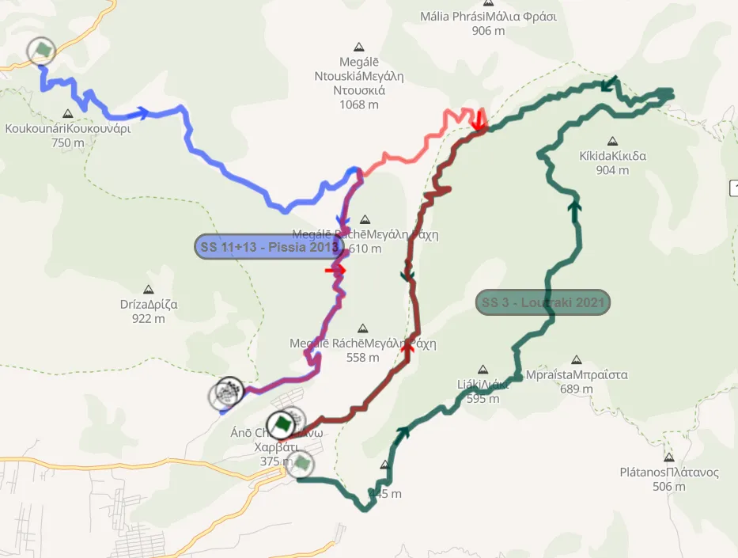
Map of Harvati compared to Loutraki and Pissia
Rally-Maps.com
SS5 Dafni was mainly new. It used a new road in a wind turbine farm, which was uphill and had many hairpins on a relatively wide road. After a fast section, it turned onto a part shared with the old Ossios Meletios stage, becoming narrower, rougher, and even faster!
SS6 Livadia was the Evangelistria stage, with a new section in the middle, since parts of it had been paved. This section was rough and narrow, passing through two marble quarries, then joining the Elikonas road from 1996 until the finish.
Bauxites was supposed to be a night stage, but it was ultimately held at dusk and was the day’s final stage.
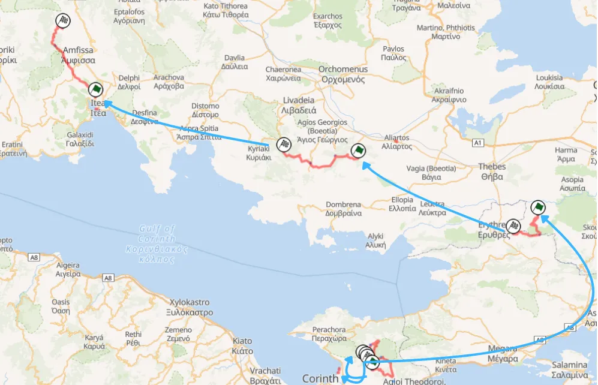
Friday's stages from 2022
Rally-Maps.com
For Saturday, there would be two loops of three repeated stages northwest of Lamia.
Pyrgos would be the day’s opener, before a pass through the very narrow and technical Perivoli stage, returning for the first time since 2005. It was so slow that the stage winner had an average speed of just 70km/h at the first pass.
Tarzan would be the last stage of both loops, in an identical configuration as the first pass of 2021.
Sunday would feature three stages just like the year before.
Eleftherohori would be the rally’s Power Stage, being slightly shortened from the finish, with the finish being just before the high-speed section amongst the trees and the tricky left junction. Sandwiched between the two passes of Eleftherohori was Elatia-Rengini. It was identical to the Rengini stage used in 2011, but was used in the reverse direction.
In 2023, the rally would come under threat due to Cyclone Daniel. Recce was disrupted, stages were flooded, and emergency road repairs had to be carried out to save the rally. Due to the heavy rain, two stages had to be shortened before the rally, Loutraki and Grammeni, and the Shakedown was cancelled.
Thursday saw just the Ceremonial Start in Athens and the SSS in Plateia Nerou, with the cars then heading to Loutraki for the overnight halt.
Loutraki was due to be just the reverse version of the 2022 stage, but due to the rain, the very technical and slow section had to be cut off. The stage now finished at the end of the tarmac section, featuring only the fast and wide parts of the test.
SS Pissia returned in name for the first time since 2013. It would be identical to the stage used in 2008. The start of the stage was quite technical, and became even slower and more technical when it met the road shared with the 2022 Harvati stage. After that technical and slow section, the road became wider, faster, and more flowing.
After a second pass of Loutraki, the crews would then head to Livadia, which was the same as in 2022. Elatia was the last stage of the day, and would be a combination of the two Elatia stages of 2021 and 2022, connecting the two with sections last used in 2011.
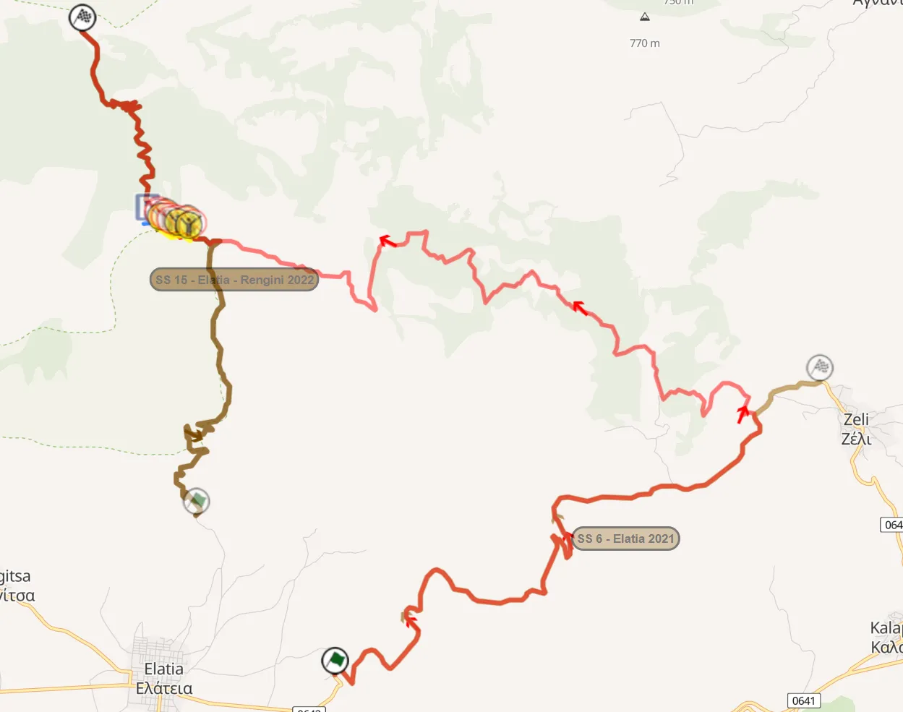
Map of Elatia compared to the two stages in the area from 2021 and 2022
Rally-Maps.com
Saturday would see two loops of three repeated stages. Pavliani returned after a year’s absence and was in grave danger of being cancelled due to the rain in recce, but thankfully it went on as usual. It used the same configuration as 2021.
Karoutes returned for the first time since 1999 when it was used in an uphill direction, combined with Bauxites. This year, it would use almost the same configuration, but would be downhill. It was the first time the Karoutes section was used in this direction since 1994, and the first time Bauxites was used downhill since 2001, when it was the pre-event Shakedown.
Eleftherohori was the closing stage, being the same as 2021.
Sunday once again featured three stages, with one being a one-pass stage.
Tarzan would be used early in the morning, in the same configuration as the previous two years, with Grammeni following, used in the WRC for the first time since 2005.
Due to the rain before the rally, the stage had to be shortened to just 9km. It started from Moschokaria and finished in Kalamaki, with two jumps just before the end.
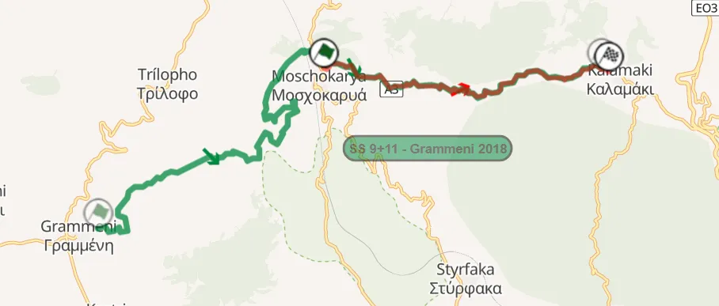
The original Grammeni and the shortened version
Rally-Maps.com
2024: Are you Seirios
The 2024 edition of the Acropolis would be a bit different compared to the previous three years, with Friday and Saturday essentially being switched.
Originally, the itinerary looked quite different. Friday was supposed to be what was eventually Saturday, with Saturday featuring stages near Lamia, and Sunday being centered around Fokida, with a new stage in the Parnassos mountain named Kalania.
Instead, the rally started on Thursday with just the Shakedown and the ceremonial start in Lamia.
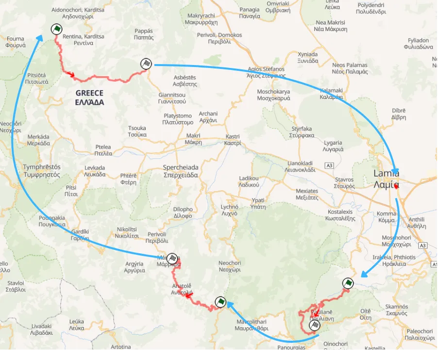
Friday's stages from the 2024 edition
Rally-Maps.com
Friday would be comprised of three repeated stages near Lamia.
Ano Pavliani would be the opening stage, combining Koumaritsi from 2005 with the classic Pavliani test. The stage started from Koumaritsi and then continued on a very technical and slow section never used before, which linked the stage to the first few kilometers of Pavliani, with the cars then descending to where the start of the test usually is for the finish.
Dafni was up next, and it was the second half of the Pyrgos stage, just starting from before the village of Dafni. Tarzan would be used in its familiar modern configuration and for the first time on the opening day of the rally.
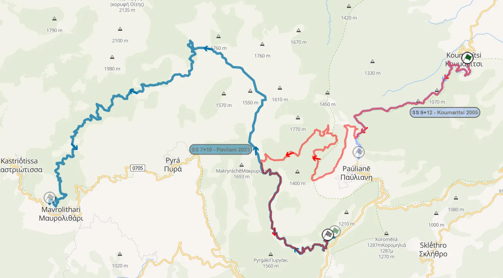
Ano Pavliani compared to Koumaritsi and Pavliani
Rally-Maps.com
Saturday would see crews head from Lamia to Loutraki and back to Lamia. SS Rengini was last year’s Elatia in reverse, with the high-speed “Pikes Peak” section used for the first time in a downhill direction. Thiva would return for the first time since 2021, and would be in a slightly different configuration, not passing through the firing range, which was a spectator favourite.
Two stages in Loutraki would follow. Aghii Theodori returned, and was a combination of the two stages that were used in the area in 2021, offering a mix of fast and slow roads, with varying degrees of roughness and road width. Loutraki was just New Pissia from the early 2010s.
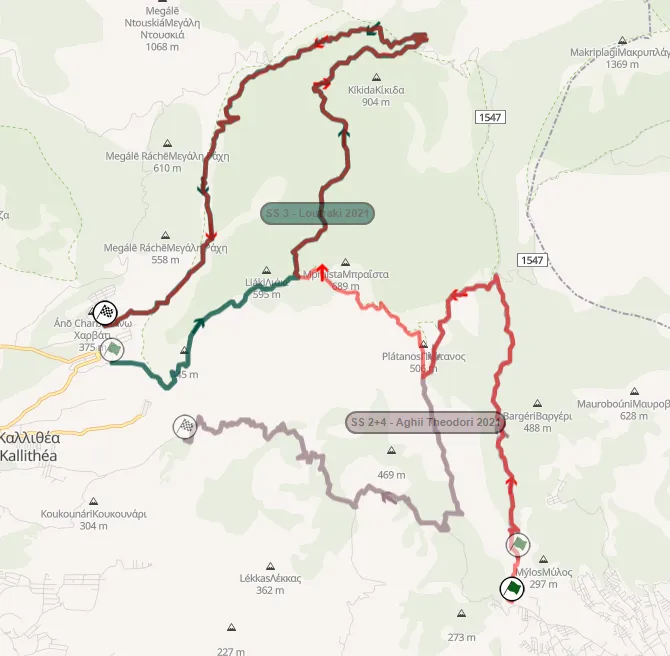
Aghii Theodori and the two stages in the Loutraki area from 2021
Rally-Maps.com
After a second pass through Aghii Theodori, there would be an SSS in the motorway near the Seirios rest area.
SS Dafni from 2022 was supposed to feature on this day, but was removed after complaints from the promoter about the number of one-pass stages on that day.
The format of the day was criticised by drivers and fans alike, due to the unnecessarily long liaisons.
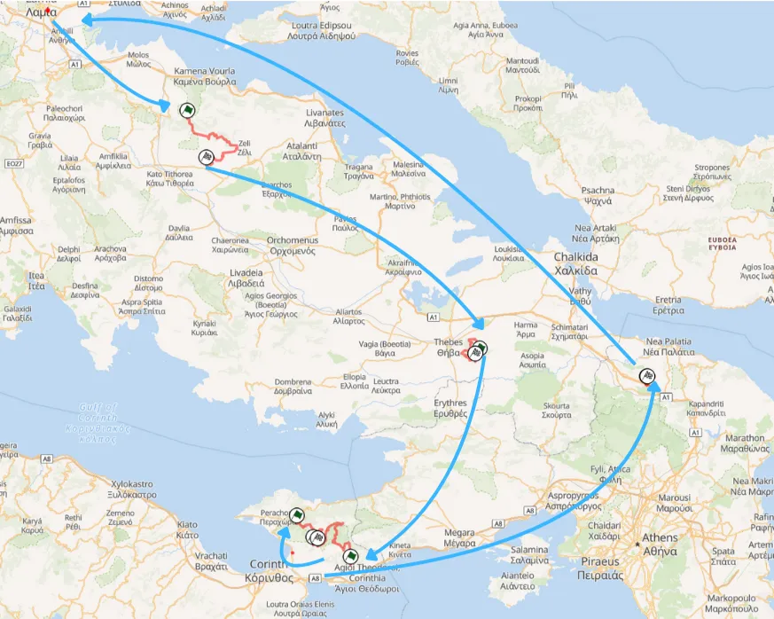
Saturday's stages
Rally-Maps.com
Sunday would again only feature three stages, with one being repeated. Inohori was a new stage that was very slow and technical, using a road that serviced a quarry at the start and became rough and slow after leaving said road.
Eleftherohori would be the rally’s Power Stage, featuring a new finish, near the Mendenitsa cemetery.
2025: A return to the old format
For 2025, the rally would return to the format used before 2024.
Thursday saw the action start with the Lygaria Shakedown, before the crews headed to Athens for the Ceremonial Start and the SSS. Unfortunately, due to a high traffic volume, the freight of the cars arrived late to the area, and the ceremonial start in the Panathenaic Stadium had to be abandoned, with the SSS in the Zappeion Park starting about an hour and a half late.
Friday started from Loutraki, with SS Aghii Theodori, the only two-pass stage of the day. It was the same as 2024, slightly extended from the start. SS Loutraki followed and was identical to 2024.
After the second pass of Aghii Theodori, the crews moved to Thiva, which had a new start, which was technical and slow, with a sideways jump that was last seen in 2012. The stage also returned to the finish used in 2021.
Stiri returned for the first time since 2001 and had a new start. It was a combination of the Distomo stage used in the EHRC and the older Stiri stage. The start was on roads used to service a wind turbine farm, which were smooth and fast, with the stage becoming rough after that. The last section of the stage was exceptionally rough and featured big drops.
Elatia-Rengini was the final stage of the day.
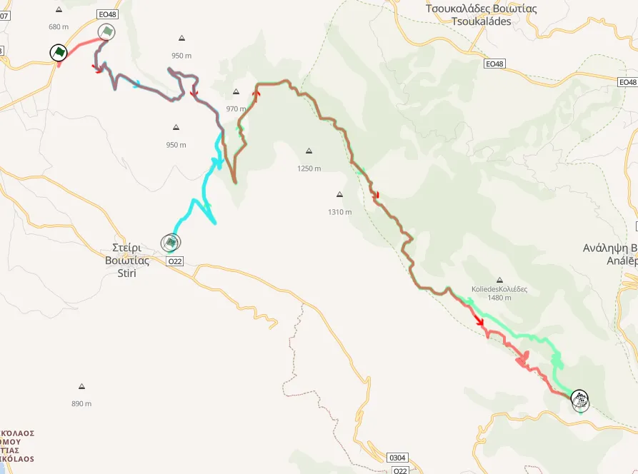
Map of Stiri, compared to the older stage and SS Distomo
Rally-Maps.com
Saturday was again two loops of three stages. Pavliani returned, used in its classic configuration, with Karoutes and Inohori being the day’s other two stages.
Karoutes wasn’t combined with Bauxites on this occasion, finishing before the tarmac for the first time since 2002.
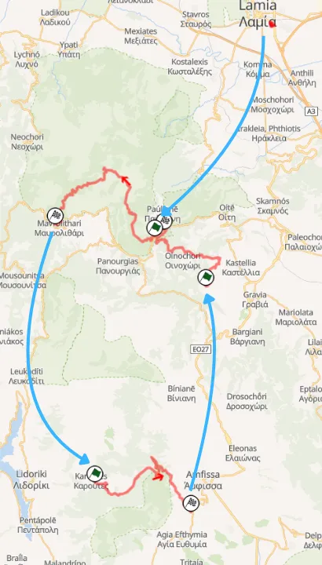
Saturday's stages
Rally-Maps.com
Sunday saw a 2x2 format for the first time since the rally’s return. Smokovo was a new stage, which was very technical and not so rough, and had two watersplashes! The test passed through the Thessaly region for the first time since 1997.
Tarzan returned as the rally’s Power Stage for the first time since 2021, in its usual configuration.
Stages used the most from 2021 to 2025
Tarzan: 5 times
Loutraki: 5 times
Eleftherohori: 4 times
Aghii Theodori: 3 times
Elatia: 3 times
Pavliani: 3 times
Percentege of Entries that finished the rally
2021: 87.5%
2022: 77.9%
2023: 75.4%
2024: 74.3%
2025: 73.1%
Thank you for reading this five-part series of posts! I will also make a post dedicated to stats I have gathered through the making of this series, so stay tuned for that later in August.


Comments